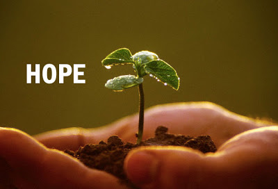

Artikel
Pengalaman Pertama Melek Soal Internet

Mungkin anak anak zaman sekarang, lebih cepat dalam mengenal dunia Internet beserta dengan gadget- gadget penunjangnya yang keren keren, berbeda sama zaman waktu gue dulu. Dulu gue aja baru tau soal Internet waktu kira kira gue SMP kelas 1 akhir, mungkin sekitar umur 11 tahun, norak ya ?? hehe. Tapi ya emang begitu adanya, gue juga bukan termasuk golongan kaum-kaum yang lelet dalam melek soal internet dan socmed yang lainnya. Waktu gue SD gue udah tau apa yang namanya google tapi ya gue belum mengenal lebih soal internet secara luas, gue tau google juga dikarenakan dulu suka dikasih tugas sm guru SD gue, tapi ya namanya masih bocah jadi ya masih polos-polos aja. hehe Jangankan gue buat kenal Internet, dulu aja gue cuma tau caranya matiin sm hidupin komputer dan main game dan gue inget banget game yang gue mainin hangoroo. Oke itu adalah sekilas awal banget gue tau internet, kalo zaman sekarang anak SD aja udah punya semua socmed yang lagi trend saat ini dari facebook samapi twitter mungkin. hehe
HARAPAN dan CITA CITA

Harapan berasal dari kata harap yang berarti keinginan supaya sesuatu terjadi; sehingga harapan berarti sesuatu yang diinginkan dapat terjadi. Dengan demikian harapan menyangkut masa depan.Setiap manusia mempunyai harapan. Manusia yang tanpa harapan, berarti manusia itu mati dalam hidup. Orang yang akan meninggal sekalipun mempunyai harapan, biasanya berupa pesan-pesan kepada ahli warisnya. Harapan tersebut tergantung pada pengetahuan, pengalaman, lingkungan hidup, dan kemampuan masing-masing. Berhasil atau tidaknya suatu harapan tergantung pada usaha orang yang mempunyai harapan. Harapan harus berdasarkan kepercayaan, baik kepercayaan pada diri sendiri, maupun kepercayaan kepada Tuhan Yang Maha Esa. Agar harapan terwujud, maka perlu usaha dengan sungguh-sungguh. Manusia wajib selalu berdoa. Karena usaha dan doa merupakan sarana terkabulnya harapan. Cita-cita merupakan Impian yang disertai dengan tindakan dan juga di berikan batas waktu. Jadi kalau kita bermimpi untuk menjadi netpreneur yang sukses, ya… harus di sertai tindakan jangan cuma berandai-andai saja. Serta jangan lupa di berikan target waktu sehingga kita punya timeline kapan hal tersebut kita inginkan terealiasasi.Dari kecil kita pasti dinasehati oleh orangtua, guru ataupun buku untuk menggantungkan cita-cita setinggi langit. Semua itu memang benar karena dengan adanya cita-cita atau impian dalam hidup kita akan membuat kita semangat dan bekerja keras untuk menggapai kehidupan yang lebih baik di dunia.